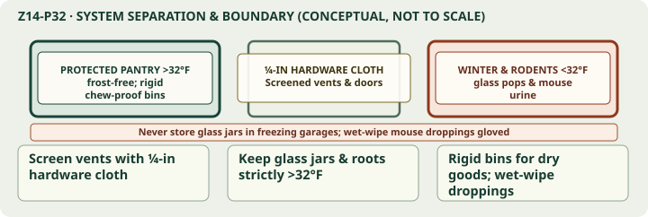

Z14-P32 · Food production and preservation · New manuscript
Protect home food storage from winter freeze snaps and rodent intrusion
Safeguard stored produce, canned jars, and dry staples against sub-zero freezing splits and disease-carrying mice or rats.
When it applies · Unheated garages, porches, basements, pantries, and rural outbuildings during Upper Midwest winters.
Equipment · Hardware-cloth vent screens (¼-inch mesh), lidded metal/thick food-grade bins, insulated blanket covers, and thermometer alerts.

Actions
- Screen EVERY cellar intake/exhaust vent, crawlspace gap, and door sweep tightly with ¼-inch galvanized hardware cloth—mice squeeze through openings the width of a pencil and contaminate far more stored food with urine/droppings than they eat.[P18, P05]
- Never store home-canned glass jars or liquid staples in unheated porches or garages that drop below 32°F—freezing expands liquid inside jars, popping vacuum seals, cracking glass, and ruining food safety silently.[P09, P18, U10]
- Keep pantry floors swept clean of spilled grains, seal dry staples in thick glass/metal/heavy food-grade containers (cardboard and thin plastic bags are chewed open overnight), and inspect weekly for droppings or gnaw marks.[P18]
Failure recognition · Storing 50 home-canned glass jars and paper bags of flour in an unheated attached garage in November where mice chew the flour and January freezes burst jar seals.[P18, P09]
Verify · Confirm ¼-inch mesh on vents, frost-free >32°F storage for glass jars/produce, and rigid chew-proof bins for dry staples.[P18, P05]
Stop or change course · Any food package chewed open or fouled by rodent droppings/urine must be discarded safely with gloved wet-wipe cleanup (never dry-sweep mouse droppings, which aerosolizes hantavirus dust).[P18, U13]
Evidence and editorial notes
- P05 · University of Minnesota Extension · Harvesting and Storing Home Garden Vegetables (current web edition)
- Section: Root-Cellar and Cold-Storage Temperature/Humidity Zones · Conditions: Basements, root cellars, unheated porches, and insulated cold bins
Support: Match stored produce to distinct storage regimes: cold-moist (32–40°F, high humidity for carrots/beets/cabbage), cool-moist (45–50°F for potatoes), cold-dry (32–35°F dry for onions/garlic), and cool-dry (50–55°F dry for winter squash); separate ethylene-producing apples from sensitive vegetables.
Limitations: Storing potatoes below 40°F converts starch to sugar; freezing temperatures ruin unhardened stored roots. · Conflicting evidence: None; prevents treating one basement temperature as universal for all crops.
Editorial note: Core root-cellar zoning and monitoring evidence in Z14. · Specialist reviewer: Post-harvest horticulture and food storage
Primary source · checked 2026-11-24 - P09 · NCHFP · Using Pressure Canners (current web edition)
- Section: Headspace, Jar Preparation, Two-Piece Lids, and Cooling Seals · Conditions: Mason-type canning jars with two-piece metal lids and screw bands
Support: Use true canning jars (never commercial mayonnaise jars), leave exact recipe headspace, remove trapped air bubbles, wipe jar rims clean, tighten bands fingertip-tight only, and let jars cool undisturbed 12–24 hours before checking vacuum seals and removing rings for storage.
Limitations: Inverting jars, tightening bands after cooling, or re-using flat sealing lids causes seal failure and silent spoilage. · Conflicting evidence: None; directly targets top home-canning mechanical failures.
Editorial note: Grounds jar-seal mechanics and inspection cards in Z14. · Specialist reviewer: Food preservation specialist
Primary source · checked 2026-11-24 - P18 · University of Minnesota Extension · Harvesting and Storing Home Garden Vegetables (current web edition)
- Section: Dry Grain, Legume, and Pantry Pest/Moisture Protection · Conditions: Cool dry household pantries storing dry beans, grains, flour, and dehydrated produce
Support: Store dry staples and dehydrated foods in cool (ideally 50–70°F), dark, dry locations inside airtight food-grade containers to prevent moisture absorption, rancidity, rodents, and pantry insects; inspect periodically for clumping, webbing, or off-odors.
Limitations: Heat, humidity, and light degrade nutrients and accelerate fat rancidity in whole grains and nuts far faster than refined staples. · Conflicting evidence: None; avoids fabricated 25-year shelf-life promises.
Editorial note: Grounds dry-goods storage, pest exclusion, and spoilage inspection. · Specialist reviewer: Food storage and Extension specialist
Primary source · checked 2026-11-24 - U10 · FEMA / Ready.gov · Winter Weather (current web edition)
- Section: Winter Household Resilience > Frozen Pipes, Ice Dams, and Heating Loss · Conditions: Sub-zero Upper Midwest winter outages and prolonged cold snaps
Support: Prevent burst pipes by insulating exposed lines, keeping cabinet doors open, shutting off and draining water lines per plumbing guidance if indoor temperatures drop toward freezing, and consolidating household occupants into one safe insulated interior room.
Limitations: Draining hydronic boilers or gas water heaters requires exact manufacturer/plumber steps to prevent equipment damage or gas leaks. · Conflicting evidence: None; regionalizes winter home defense for Minnesota conditions.
Editorial note: Anchors winter pipe protection, thermal-zone consolidation, and abandonment thresholds. · Specialist reviewer: Residential plumbing, HVAC, and cold-weather emergency management
Primary source · checked 2026-11-24 - U13 · CDC · How to Make Water Safe in an Emergency (2024-09-19)
- Section: Sanitation, Hand Hygiene, and Emergency Waste Containment · Conditions: Household water-service or sewer interruption
Support: Maintain separate handwashing stations using safe water and soap (or alcohol hand rub when hands are not visibly soiled), line emergency bucket toilets with heavy bags and tight lids when sewer service is unusable, and never mix bleach with ammonia or acids.
Limitations: Improvised sanitation is a temporary containment bridge until municipal sewer or licensed sanitation resumes; follow local health department disposal orders. · Conflicting evidence: None; prevents fecal-oral outbreaks and toxic chloramine gas mixing.
Editorial note: Core household sanitation and chemical-mixing boundary in Z13. · Specialist reviewer: Environmental health and sanitation specialist
Primary source · checked 2026-11-24
Current assessment · A04-U13 (2026-11-25) · Open: support partial or missing (A04): The original water section cannot qualify bucket toilets or all chemical conditions. Water/hygiene and sanitation/chemical controls need partial separation and local sanitation review. Limits: Specialist review PENDING (Environmental health and sanitation specialist); publication HOLD. All release decisions pending.
Current assessment · W2C-E035 (2026-11-28) · Narrowed: later guidance limits this claim: Alcohol rub is a fallback only when soap and water are unavailable; it does not replace handwashing after toilet, diaper or vomit tasks or before food. Limits: The baseline U13 text is kept for history; cards now cite U26 and U27 for the hand-hygiene boundary.
Source lineage · UMN Extension Vegetable Storage and Ready.gov Food; new manuscript · Classification · New manuscript.